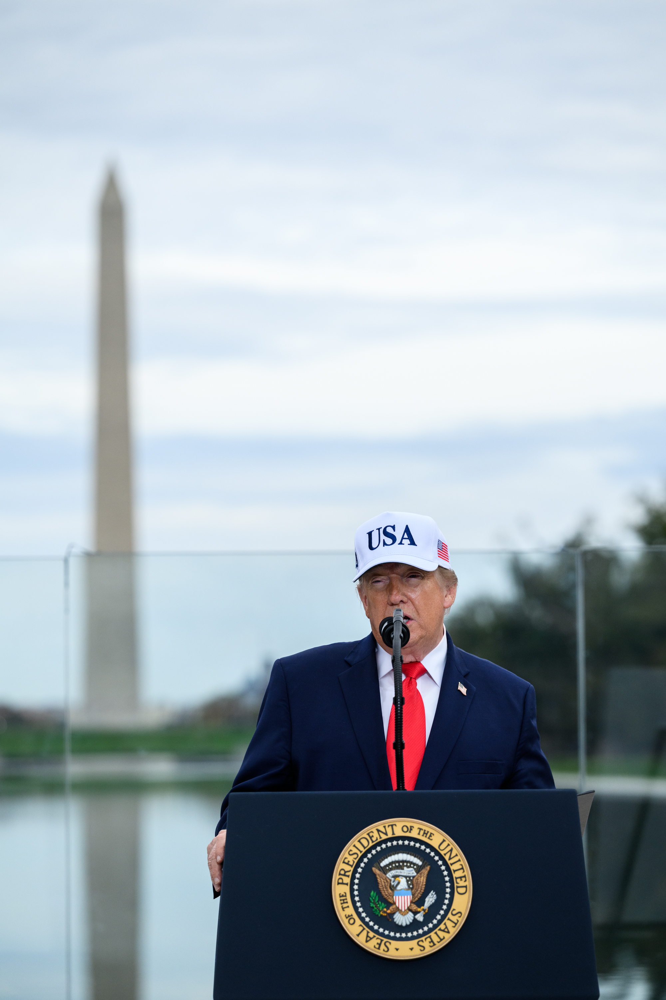

Titre de l’article
La fin de Trump ? Défaite éclatante de Trump aux élections de mi-mandat - Informations rapides

Le 3 Novembre 2026, les USA ont commencé les élections de mi-mandat, Midterms, qui le monde entier attendait avec impatience. Donald J. Trump, 45em et 47em Président des USA, avec son camps, les Républicains, les a pourtant perdue à plate couture. Désormais, le Président américain n'a plus le contrôle du Congrès (Il n'a plus le contrôle ni de la chambre des représentants ni du Sénat), maintenant au contrôle des Démocrates (à majorité). Qu'est ce que cela signifie ? Et bien tout simplement que Donald J. Trump et son parti (voir notre article Trump - Les midterms, que se passe t'il ?) ne contrôlent plus l'aspect législatif des USA, puisque le Congrès (et donc le Sénat) sont à majorité démocrates. De plus, des mises en exament de Trump (procèdure d'Impeachment) pourront (éventuellement) être déclenchées par les Démocrates, pour une éventuelle procèdure de déstitution. De plus, avec ces majoritées aux Chambres du Congrès, les Démocrates pourronts revenir sur les anciennes lois votées sous le Congrès Républicain, ils pourront faire des enquêtes approfondies sur l'Administration Trump, et, en somme, bloquer Trump et ses actions pendant le reste de son mandat sur le plan législatif. En est ce-finit pour lui ? Durant la période ou il occupait déjà le poste de POTUS (Président of The United States), il avait d'ailleurs déjà eu à 2 reprises la procédure d'Impeachment, qui n'avait pas abouti lors du passage au Sénat qui n'avait à l'époque pas eu les 2 tiers de voix demandées. Maintenant que les Démocrates ont gagnés ces Midterms, la question peut se poser : Que feront t'ils ? Est ce la fin de l'administration Trump, telle qu'on l'a connue avec ses polémiques à répétition ? Les Démocrates vont t'ils reprendre la main sur la Maison Blanche ? Nous attendons de voir les actions Démocrates au Congrès et au Sénat avec impatience.
Veuillez nous excuser pour ce court article - La Rédaction.
Pour plus d'informations, nous vous invitons à consulter notre article Trump - Les midterms, que se passe t'il ? Sorti la veille des midterms qui explique mieux l'enjeu des Midterms et ce qu'elles débloquent. Lien ci dessous :
« I thought we would do better. » "Je pensais que nous ferions mieux", Donald Trump sur Fox News le 3 Novembre sur Fox News